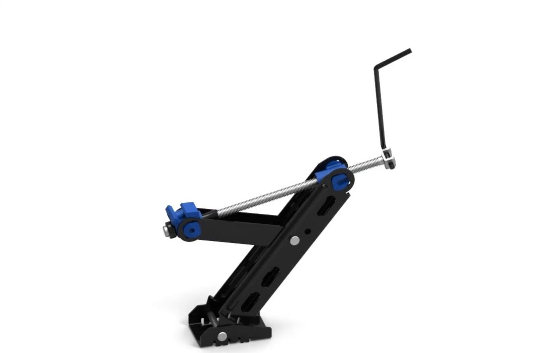
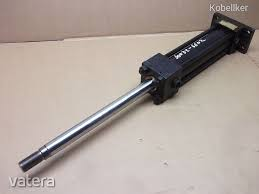
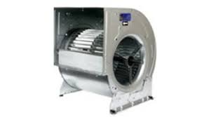
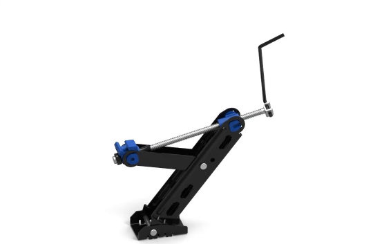
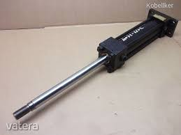
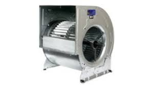

Tekintse meg korábbi munkáimat!
A képeken látható y-autóemelő, hidraulikus munkahenger és ventilátor a Gép- és Terméktervező Tanszék megbízásából készültek.



A képeken látható y-autóemelő, hidraulikus munkahenger és ventilátor a Gép- és Terméktervező Tanszék megbízásából készültek.


